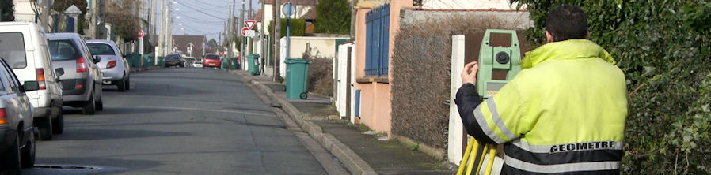
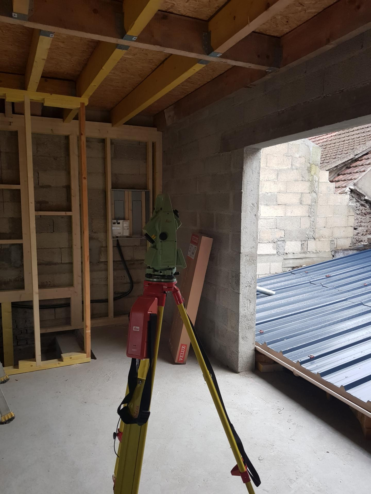
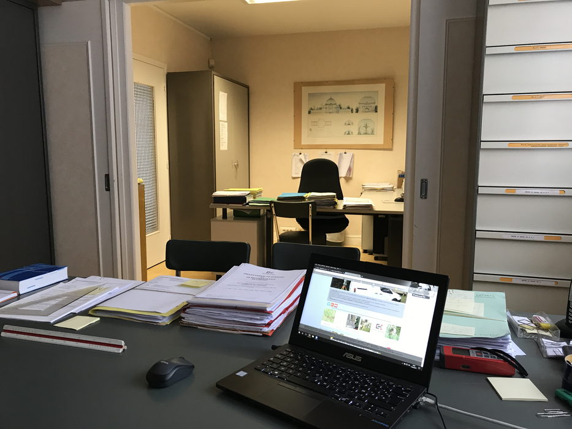

Travailler au Cabinet ABELLO
Nous sommes un cabinet de géomètres-experts installé à Mantes-la-Jolie et à Limay, avec une activité partagée entre le foncier, la topographie, la copropriété et l'urbanisme.
Ce que ça veut dire concrètement : on ne fait pas que du levé. Un technicien qui arrive ici touche au bornage, à la division, à la copropriété, aux relevés d'intérieurs, à l'implantation et aux cubatures. C'est un métier complet, pas un poste de saisie.
Nous travaillons au scanner 3D FARO Focus Premium, sur trois stations totales robotisées et trois récepteurs GNSS bi-fréquence corrigés par le réseau TERIA, avec une tablette terrain sous Land2Map. Au bureau, nous dessinons sous AutoCAD, ZWCAD et Covadis.
Nos offres
Poste ouvert
Géomètre foncier confirmé / Chef de brigade (H/F)
Bureau de Mantes-la-Jolie (78) — sur site
- La mission
- Conduire une brigade sur le terrain et mener les dossiers fonciers de bout en bout : bornage, division, document d'arpentage, copropriété, relevés et implantations. Puis le calcul, le report et le dessin au bureau.
- Le profil
- Expérience confirmée en cabinet de géomètre-expert. Autonomie sur les stations totales et le GNSS, maîtrise d'AutoCAD et de Covadis, aptitude à encadrer un aide-géomètre.
- Contact
- cabinet.abello@orange.fr
Opérateur-géomètre / Aide-géomètre
Bureaux de Limay et de Mantes-la-Jolie (78)
- La mission
- Rattaché au chef de brigade, vous participez aux relevés de terrain : division, bornage, copropriété, topographie, implantations.
- Le profil
- Formation Bac Pro ou BTS géomètre-topographe. Maîtrise de la station totale Leica. Motivé et dynamique.
- Contact
- cabinet.abello@orange.fr
Technicien géomètre
Bureaux de Limay et de Mantes-la-Jolie (78)
- Le contexte
- Dossiers fonciers en milieu urbain et rural, missions topographiques pour des clients privés et publics.
- Les missions
- Réaliser les levés de terrain : topographie, division, copropriété, bornage, relevés d'intérieurs et de façades, contrôles et suivi d'ouvrages d'art. Puis, au bureau : calculs, report, dessins et plans.
- Le profil
- Maîtrise des stations totales, du GPS et des logiciels de DAO (Covadis, PIC). Esprit d'équipe, réactivité, rigueur. Niveau BTS minimum.
- Contact
- cabinet.abello@orange.fr
Géomètre-Expert
Bureau de Limay (78)
- Les missions
- Prendre la responsabilité du bureau secondaire. Levés de terrain, topographie, division, copropriété, bornage.
- Le profil
- Maîtrise des appareils de mesure et des logiciels de DAO (AutoCAD, Covadis).
- Contact
- cabinet.abello@orange.fr
Le métier, au quotidien




Les questions qu'on nous pose
Prenez-vous des stagiaires et des apprentis ?
Oui, plutôt à partir du niveau BTS ou licence : la nature de nos dossiers suppose des bases déjà acquises. Écrivez-nous en précisant votre formation, la période et la durée du stage recherché.
Faut-il le permis de conduire ?
C'est fortement recommandé, et en pratique presque indispensable : les chantiers sont répartis sur une centaine de communes du Mantois, de la vallée de la Seine et des plateaux.
Je viens d'une autre région, formé sur un autre matériel.
Le matériel n'est pas un obstacle : la prise en main d'un instrument s'apprend en quelques jours.
Ce que nous regardons d'abord, c'est l'expérience du foncier. Le bornage, la division, la copropriété s'apprennent sur les dossiers, pas sur les appareils.
Et comme le métier consiste aussi à rédiger — procès-verbaux, convocations, courriers lus par des notaires et par des propriétaires — une bonne maîtrise du français écrit est indispensable.
Puis-je candidater sans qu'une offre soit ouverte ?
Oui. Nous conservons les candidatures spontanées et nous y revenons quand un poste se libère.